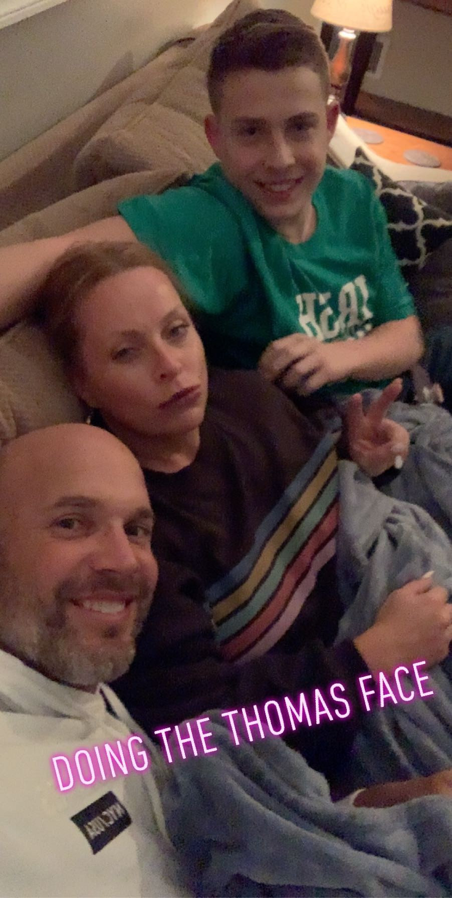

How Far You've Come
Mom, as the oldest, I can look back on where you, Dad, and I started and see how far we’ve all come. Watching your journey as a mother has shown me so many valuable life lessons, and you’ve played such a huge role in shaping me into the man I’ve become today. Through all the tough times, struggles, and challenges, you always found a way to keep this family at the center of it all. Your strength, love, and dedication have meant more to me than words can ever fully express.